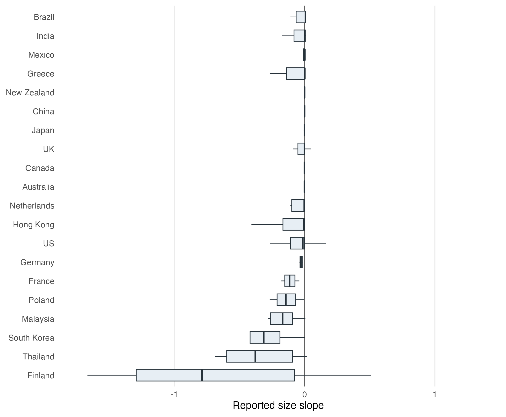

Abstract
Key finding: stronger rule of law goes with a larger conventional size premium, the opposite of the intuitive guess that better institutions should shrink it, and the pattern survives dropping the United States. Generalized trust plays a smaller, conditional role, associated with a weaker premium mainly where the rule of law is weak.
Reported estimates of the size premium vary widely across studies, countries, periods, and designs. We examine whether generalized trust and rule of law help account for that heterogeneity. We study 1,613 reported size-slope estimates from 105 studies and 31 countries, linking them to trust measures from the European Values Study and World Values Survey, and to rule of law from the Worldwide Governance Indicators. The meta-regressions control for study design, specification, precision, publication context, and market and macro-financial conditions; Bayesian model averaging assesses uncertainty over the control set. The more stable association is with rule of law, and it runs against the intuitive guess that better legal institutions shrink the premium: stronger rule of law is associated with more negative reported size slopes, hence larger conventional size premia, and the association survives dropping the United States. The trust association is conditional: higher generalized trust is linked to less negative reported slopes, and thus a weaker premium, where rule of law is weak, and it fades as rule of law strengthens. The conditional pattern is sign-consistent but imprecise under clustered inference and leans on the large U.S. share of the sample. Formal and informal institutions thus help organize part of the disagreement in this literature, although the analysis concerns variation in reported estimates and does not identify causal effects.
Fig: Reported size slopes vary widely across countries
Distribution of 1/99 winsorized reported size-slope estimates across countries with at least five estimates, from the meta-analysis of 1,613 estimates in 105 studies. More negative slopes correspond to a stronger conventional size premium. The wide cross-country dispersion is the motivation for asking whether institutions, generalized trust and the rule of law, help organize the disagreement in what the literature reports.
Reference: Schwarz Jiri, Havranek Tomas, Irsova Zuzana, Novak Jiri (2026), “Trust, Rule of Law, and the Size Premium: Evidence from a Meta-Analysis.” Anglo-American University and Charles University, Prague. Available at meta-analysis.cz/trust.